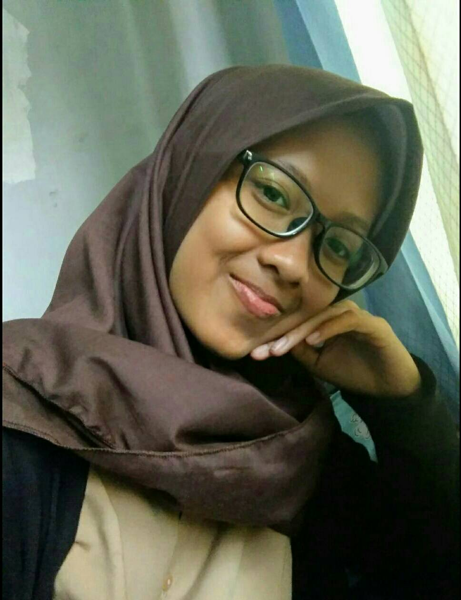
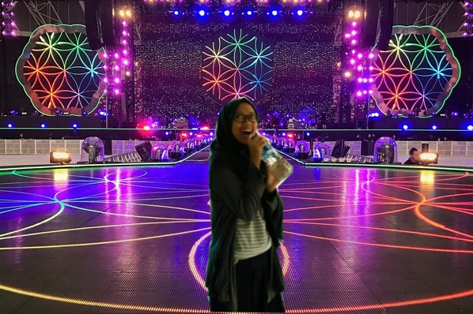
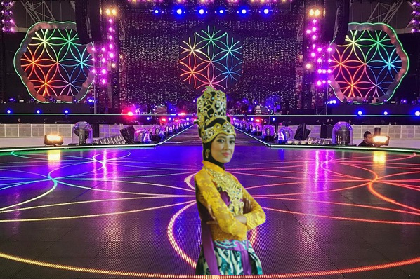
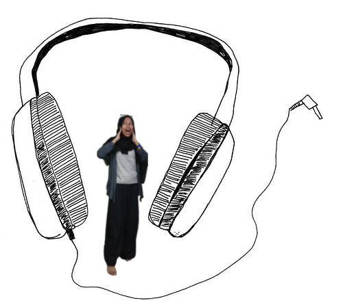

Siapa sih @rifaalk?
Namanya ialah Rifa Luthfiyyah Khairunnisa seorang manusia yang tidak luput dari dosa. Rifa merupakan putri pertama dari Bapak Edi Junaedi,S.T dan Ibu Dwi Ratni Handayani,S.Pd. Rifa punya satu adik, namanya Fakhri Faadhillah Akram. Rifa seorang pelajar di SMK-SMAK Bogor, angkatan 62 dan sekarang Ia kelas 11. Orang-orang memanggilnya "Rifa" ada juga yang memanggilnya "Ripeh" tapi kalo di keluarga Ia dipanggilnya "ipa", namun untuk sejauh ini belum ada yang memanggilnya "sayang" selain keluarganya. Miris? oh tentu tidak. Karena, sekarang Ia sedang sibuk memperbaiki diri agar nantinya disandingkan dengan yang baik pula. Pacaran itu berat, dosanya juga berat, ngerjain tugas ini aja udah pengen nangis, apalagi nanggung dosanya:( Rifa gakuadhhhh gengss:(.
Hobinya @rifaalk apa yha?
Hobinya rifa yang pertama tuh nyanyi. Dia sukaaa banget nyanyi, ya walau suaranya ga sebagus Raisa dan nafasnya ga sepanjang jalan kenangan. Mayan lah ga sampe mecahin jendela rumah. Rifa tuh waktu SD pernah les nyanyi di bina vokalia terus ganti nama jadi bee victoric tapi sekarang udah pindah tempat:( sedih deh padahal rifa pengen les lagii:(. Oh iya, dulu juga Rifa pernah ikut lomba nyanyi gituu, nyanyinya lagu "Desaku" sama "Bunda Piara" terus juara harapan 1. Yeaaayyy! mayanlah ya gengs.
Hobinya rifa yang kedua itu nari gengs! Dia suka nari tari tradisional gitu. Jadi, dulu pas Rifa SD, dia ikut ekskul nari setiap hari Jum'at. Narinya itu buat acara perpisahan. Tapi, dia berhenti pas kelas 5, soalnya jadwal narinya bentrok sama jadwal les. Terus pas smp, dia pernah disuruh buat jadi dayang dayang pas upacara adat. Nah, pas porsip kemarin juga dia ikut lomba tatra juga, tapi ga menang hueheheehehehe.
Hobinya rifa yang ketiga itu dengerin musik atau kata nax jaman now mah demus. Bukan debus ya gengs. Beda. Rifa tuh suka dengerin musik yang melow melow, kaya lagu raisa gitu. Rifa tuh ga terlalu suka lagu jedagjedug. Terus Rifa juga ga suka dengerin lagu dengan voume yang kenceng banget, soalnya ga bagus kata mama. Oh iya, Rifa juga paling males deh naik angkot yang nyetel lagunya jedagjedug terus volumenya gede banget sampe bikin jantung deg degan. Rifa ga sukak.
Arti nama Rifa Luthfiyyah Khairunnisa
Kata mama, nama Rifa Luthfiyyah Khairunnisa diambil dari bahasa Arab. Rifa artinya keluhuran. Luthfiyyah artinya kelembutan. Khairunnisa artinya wanita yang sebaik-baiknya. Jadi, arti Rifa Luthfiyyah Khairunnisa ialah sebaik-baiknya wanita yang mempunyai hati yang lembut dan budi pekerti yang luhur. Aamiin! Bagus kan? Oh iya, jadi dulu tuh papa Rifa sempet ngasih ide nama gitu ke mama. Namanya itu Siti Jaenab:) Bagus sih artinya, cuma aku lebih suka nama Rifa yang sekarang hehehe. Walaupun kata orang-orang namanya ribet, kadang mereka kesel sendiri nulis nama Rifa soalnya abis lut pake h, y nya dua, n nya juga dua. Terus Rifa juga bawel kalo namanya salah. Jadi, begitulah gengs pokonya.
Umur @rifaalk berapa?
Ciye penasaran yaa? Umur Rifa tuh masih 15 tahun, tapi nanti bulan April 16 tahun. Rifa lahir di Bogor, 26 April 2002. Sedih sih, temen-temen yang lain tahun ini umurnya udah 17, tapi Rifa belum:( Soalnya Rifa anak akselerasi. Iya, akselerasi TK HAHAHAHA. Rifa tuh masuk TK umur 3 tahun jadi pas SD umur 5 tahun.
Random Fact About Rifa
Pertama, Rifa punya bantal kesukaan, teplek, busanya keras gitu. Kedua, Rifa punya sarung bantal yang jarang banget dicuci. Dulu, kalo sarung bantalnya dicuci Rifa bakalan ngambek. Soalnya tuh, wanginya udah ga sama lagi. Dulu, kalo kemana mana harus banget bawa sarung bantalnya kalo engga ga bakal bisa tidur, sampe kalo nginep di hotel sarung bantal hotenya diganti. Itu dulu ya gengs tapi kalo sekarang udah ga gitu gitu banget. Ketiga, Rifa punya guling kesukaan juga. Keempat, Rifa takut kupu-kupu. Padahal, dibawah sarung bantalnya ada gambar kupu-kupu. Kelima, Rifa tuh seneng banget sama anak keciil, gemaaash soalnyaa.
Motivasi Hidup
Sebuah cerita bukan hanya indah pada waktunya. Melainkan saat kita tahu artinya dan mau mengambil hikmahnya. Jadi, jangan lupa untuk BERSYUKUR!